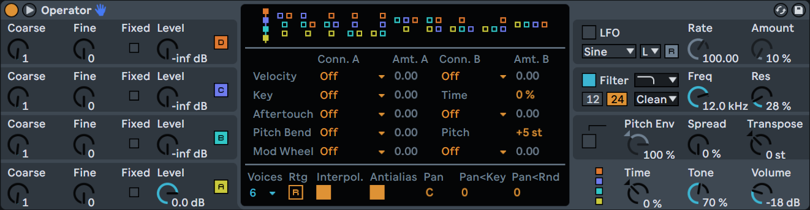

Introduction
The exploration of connections between acoustic parameters and emotional perception represents a growing challenge in the fields of sound synthesis and music creation assisted by artificial intelligence. However, the question of whether certain sound synthesis parameters possess an inherently anxiogenic potential has not been studied. This study proposes an exploratory analysis conducted from sounds generated by a virtual frequency modulation (FM) synthesizer, in order to identify characteristics likely to induce a perception of anxiety. The variables considered include waveform, temporal dynamics (ADSR), internal dissonance, and modulation structure.
The objective is twofold: on one hand, to quantify the influence of these parameters on the perceived anxiogenic feeling; on the other hand, to evaluate the capacity of a statistical model to learn these relationships with a view to future applications in perceptive modeling and conditioned musical generation.
The Synthesizer: Operator
The Ableton FM Operator synthesizer consists of four oscillators. Each oscillator generates a waveform (sinusoidal, square, triangular, sawtooth, etc.) that forms the basis of the sound.
In this study, the oscillators were connected according to a sequential modulation scheme, where each oscillator (i+1) modulates the frequency of the previous one (i), in order to produce more complex timbres. Each oscillator has frequency control (perceived pitch of the sound) and harmonic variations relative to the frequency of the main oscillator. The attack, decay, sustain, and release (ADSR) parameters describe the temporal evolution of volume: appearance, maintenance, and extinction of the sound.
Filters, envelopes, or effects were not taken into account in order to limit complexity and focus the analysis on parameters directly related to sound generation.
Methodology
To construct the dataset of 256 sounds, random generation of parameters ensured a more uniform distribution of possible combinations. The waveforms of the four oscillators constituted the main source of variation, while other parameters — such as modulation frequencies (fine) and temporal envelopes (ADSR) — were randomly assigned according to representative ranges of slow, medium, or fast variations. This method allowed covering a wide range of combinations while limiting biases in the distribution of generated sounds.
Each sound was implemented in Operator, then evaluated by several listeners via an online survey. Since the number of active oscillators varied from one sound to another, many parameters were not used, resulting in the presence of missing values (NaN) in the dataset. To address this problem and maintain a coherent representation of sounds, several derived variables were created.